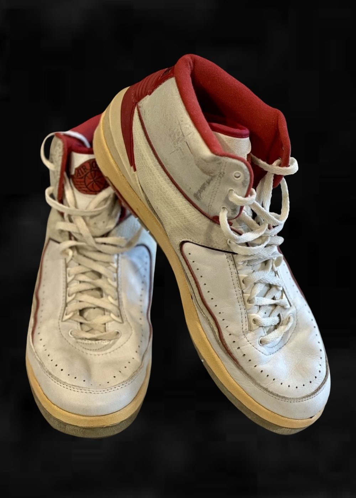

1986–87 Michael Jordan — Air Jordan Sneakers
Verified game-worn sneaker analysis documenting use against the Milwaukee Bucks through comparative photographic and video review.
Image Evidence

Findings Summary
Comparative image analysis identified multiple consistent wear characteristics between the examined sneakers and documented in-game photography and video.
Identifying Characteristics Observed
- Midfoot red piping stress distortion consistent across examined frames.
- Creasing pattern consistent with the documented date span.
- Creasing pattern cross-referenced against multiple examples, with each presenting a distinct piping crease.
Provenance & Supporting Material
This pair is accompanied by a Chicago Bulls floor pass dated and signed by Tim Hallam, Head of Public Relations for the Chicago Bulls.
- Letter of Authenticity: Yes
- Source Material: Broadcast footage + period publication
- Internal Reference ID: CF-0001-AJ-1987
Placeholder for limitations, incomplete sources, or ongoing research notes.
The material presented here represents a curated sample of the comparative findings. The full analysis includes additional frame review and extended documentation.